การติดตั้งเฟิร์มแวร์ ZigBee Coordinator สำหรับอุปกรณ์ CC2530 USB Dongle#
▷ อุปกรณ์ ZigBee - CC2530#
อุปกรณ์ที่ได้นำมาทดลองใช้งานคือ บอร์ดหรือโมดูลแบบ SMD ในซีรีย์ E18 ของบริษัท Chengdu Ebyte ในประเทศจีน ซึ่งใช้ชิป CC2530F256 (8051-based, 256 KB Flash, 8KB SRAM) ของบริษัท Texas Instruments (TI) สามารถสื่อสารข้อมูลไร้สายด้วยโพรโทคอล IEEE 802.15.4 / ZigBee ในย่านความถี่ 2.400 ~ 2.480 GHz (ISM band) และสามารถติดตั้งเฟิร์มแวร์ Z-Stack Protocol Stack ได้ (ดังนั้นจึงใช้งานร่วมกับ Zigbee2MQTT และ ZHA / Home Assistant ได้ด้วย)
โมดูล E18 Series (User Manual) จำแนกได้เป็น 3 กลุ่มย่อย ตามกำลังส่งคลื่นวิทยุ (RF Transmission Power) และมีประเภทของสายอากาศให้เลือกใช้ได้คือ PCB Trace กับ External Antenna (IPEX connector)
- โมดูล E18-MS1-PCB และ E18-MS1-IPX
สำหรับสื่อสารระยะใกล้ (ไม่เกิน 200 เมตร ใช้งานในที่โล่ง)
- Vcc: 2.0V ~ 3.6V
- Tx power: 4dBm / 2.5mW max. (current: 30mA peak.)
- Built-in PA (Power Amplifier): No
- โมดูล E18-MS1PA2-PCB และ E18-MS1PA2-IPX
สำหรับสื่อสารระยะกลาง (ไม่เกิน 600 เมตร ใช้งานในที่โล่ง)
- Vcc: 2.0V ~ 3.6V
- Tx power: 20dBm / 100mW max. (current: 100mA peak.)
- Built-in PA+LNA / CC2592 RF Range Extender: Yes
- โมดูล E18-2G4Z27SP และ E18-2G4Z27SI
สำหรับสื่อสารระยะไกล (ไม่เกิน 800 เมตร ใช้งานในที่โล่ง)
- Vcc: 2.5V ~ 3.6V
- Tx power: 27dBm / 250 mW max. (current: 500mA peak.)
- Built-in PA+LNA / CC2592 RF Range Extender: Yes
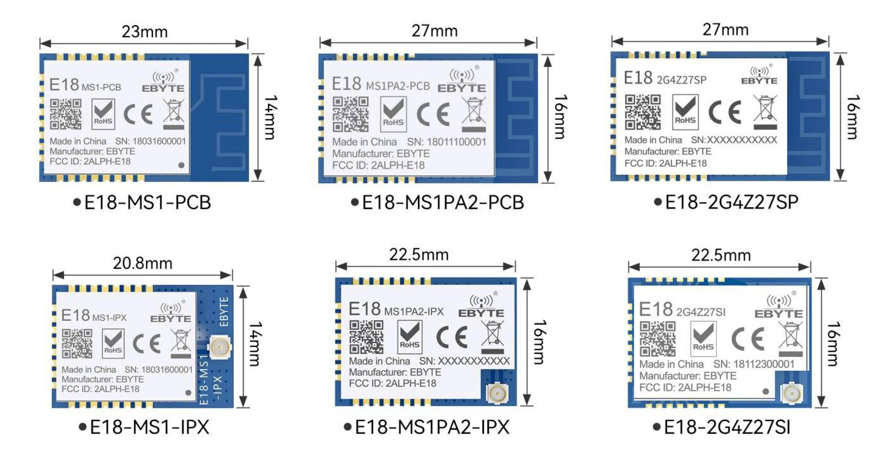
รูป: โมดูล E18 Series ของ Ebyte
แต่หากจะนำมาทดลองใช้งาน ก็แนะนำให้เลือกเป็นบอร์ดทดสอบ (Test Board) เพื่อความสะดวกในการใช้งาน เนื่องจาก CC2530 ไม่สามารถเชื่อมต่อกับ USB ได้โดยตรง ดังนั้นจึงมีการเพิ่มวงจร USB-To-TTL Serial Port (CH340G) มีไอซีแปลงแรงดัน 5V (จากพอร์ต USB) ให้เป็น 3.3V สำหรับ VCC มีปุ่มกด และมีขา I/O pins ที่มีระยะห่างระหว่างขาเท่ากับ 2.54 มม. ตัวอย่างเช่น
- E18-TBL-01 Test Kit (Module: E18-MS1-PCB)
- E18-TBH-01 Test Kit (Module: E18-MS1PA2-PCB)
- E18-TBH-27 Test Kit (Module: E18-2G4Z27SI)
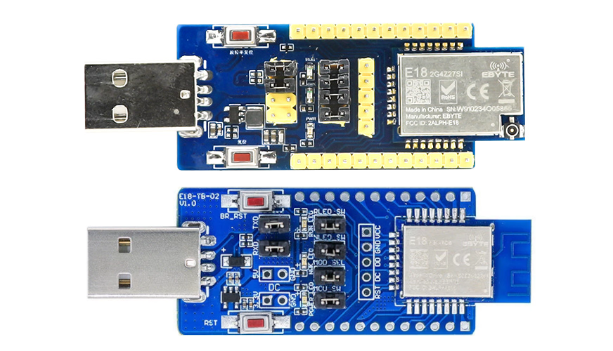
รูป: ตัวอย่างบอร์ดทดสอบ Ebyte E18 Test Kits
▷ การติดตั้งเฟิร์มแวร์สำหรับ CC2530-based E18-Series Test Boards#
อุปกรณ์ที่นำมาใช้งาน
เตรียมอุปกรณ์ฮาร์ดแวร์ที่เกี่ยวข้อง ได้แก่
- บอร์ดทดสอบ CC2530
- อุปกรณ์ SmartRF04EB Programmer หรือ CC Debugger
เริ่มต้นด้วยการเชื่อมต่ออุปกรณ์ Programmer / Debugger เข้ากับบอร์ด CC2530 และนำไปเสียบเข้ากับพอร์ต USB ของคอมพิวเตอร์ผู้ใช้
ขา P2.1 / P2.2 ของชิป CC2530 เป็นขาสัญญาณ Debug Data (DD) / Debug Clock (DC) สำหรับ อุปกรณ์ SmartRF04EB Programmer หรือ CC Debugger
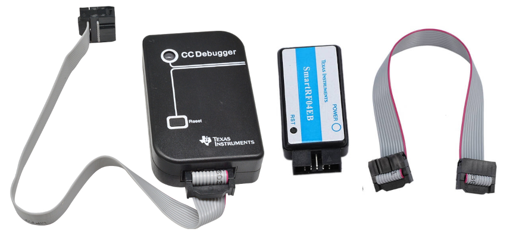
รูป: อุปกรณ์ CC Debugger (ซ้าย) และ SmartRF04EB Programmer (ขวา)
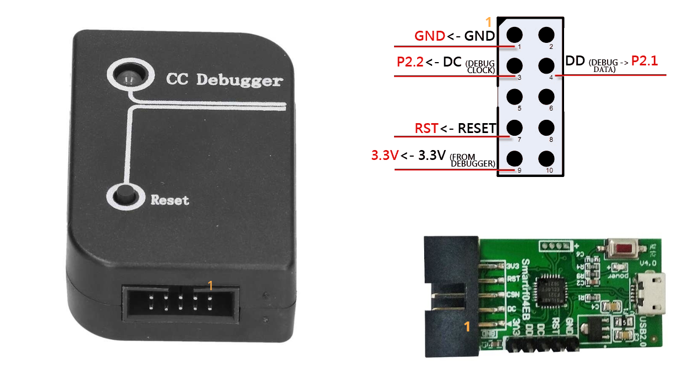
รูป: คอนเนกเตอร์ (Socket) และตำแหน่งของขา (2x5 Pins)
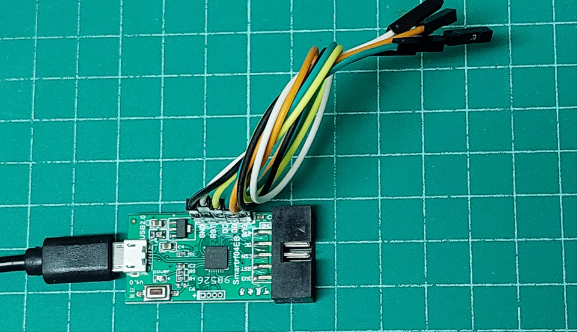
รูป: อุปกรณ์ SmartRF04EB Programmer (ไม่มีกล่องใส่) ที่ได้เลือกมาใช้งาน (ขา Pin Headers เรียงจากซ้ายไปขวา: GND, RST, DC, DD, 3.3V)
ขั้นตอนการดำเนินการ (สำหรับคอมพิวเตอร์ผู้ใช้ Linux / Ubuntu)
1) ติดตั้งแพ็กเกจ cc-tool สำหรับ Ubuntu
$ sudo apt install -y cc-tool
2) ทำคำสั่งต่อไปนี้ เพื่อตรวจสอบดูว่า มองเห็นอุปกรณ์ USB หรือไม่ (เลือกใช้ SmartRF04EB เพื่อการสาธิต)
$ lsusb | grep Chipcon
Bus 002 Device 005: ID 11a0:eb20 Chipcon AS SmartRF04EB
จากข้อความเอาต์พุต จะเห็นได้ว่า มองเห็นอุปกรณ์ " Chipcon AS SmartRF04EB"
(ID: 11a0:eb20)
3) ทำคำสั่ง cc-tool เพื่อตรวจสอบดูว่า
มองเห็นอุปกรณ์เป้าหมาย (Target Device) หรือไม่
$ sudo cc-tool --test
Programmer: SmartRF04EB
Target: CC2530
Target is locked.
Device info:
Name: SmartRF04EB
Debugger ID: 0050
Version: 0x0400
Revision: 0x0047
No operations allowed on locked target without erasing
4) ทำคำสั่งเพื่อลบข้อมูลในหน่วยความจำแฟลชทั้งหมด
$ sudo cc-tool -e
Programmer: SmartRF04EB
Target: CC2530
Target is locked.
Erasing flash...
Completed
$ sudo cc-tool --test
Programmer: SmartRF04EB
Target: CC2530
Device info:
Name: SmartRF04EB
Debugger ID: 0050
Version: 0x0400
Revision: 0x0047
Target info:
Name: CC2530
Revision: 0x24
Internal ID: 0xA5
ID: 0x2530
Flash size: 256 KB
Flash page size: 2
RAM size: 8 KB
Lock data size: 16 B
ทำคำสั่งอ่านค่า Primary & Secondary MAC Addresses ของอุปกรณ์
# Read the primary and secondary MAC addresses.
$ sudo cc-tool -a
Programmer: SmartRF04EB
Target: CC2530
MAC addresses, primary: XX:XX:XX:XX:XX:XX:XX:XX,
secondary: FF:FF:FF:FF:FF:FF:FF:FF
5) ดาวน์โหลดไฟล์เฟิร์มแวร์ Koenkk's Z-Stack Firmware
เลือกใช้ Z-Stack_Home_1.2 เป็นใช้งานเป็น ZigBee Coordinator
ไฟล์ CC2530_CC2592_DEFAULT_20211115.zip
# Extract firmware files (.hex / .bin) from the zip file.
$ unzip CC2530_CC2592_DEFAULT_*.zip -d firmware/
# Erase flash, write firmware, verify flash using CRC-16
# and preserve the secondary MAC address.
$ sudo cc-tool -e -w ./firmware/CC2530ZNP-Prod.hex -v crc -p
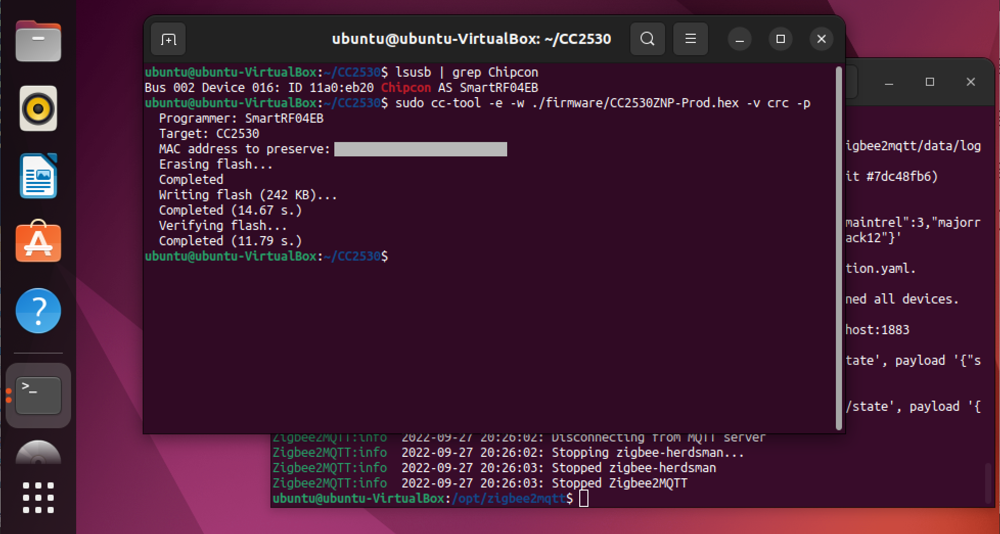
รูป: การทำคำสั่ง cc-tool ใน Bash Shell ของ Ubuntu 22.04 LTS (VM)
เนื่องจากบอร์ด Ebyte E18 Test Board ใช้ขา P1.4 และ P1.5 ของชิป CC2530 สำหรับสัญญาณ UART TXD (Output) / RXD (Input) ตามลำดับ เพื่อนำไปต่อกับชิป CH340G แต่เฟิร์มแวร์ Z-Stack_Home_1.2 / Coordinator ใช้ขา ขา P0.2 และ P0.3 ตามลำดับ ดังนั้นจะต้องมีการต่อสายสำหรับสัญญาณ TXD / RXD ให้ถูกต้อง
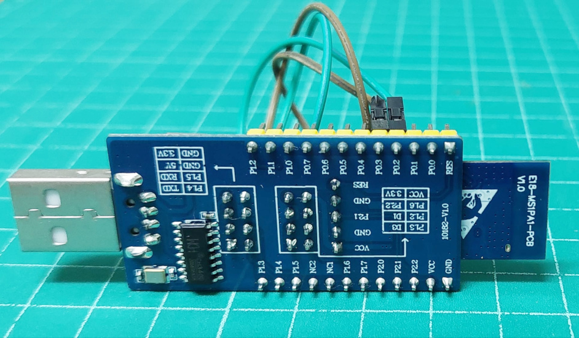
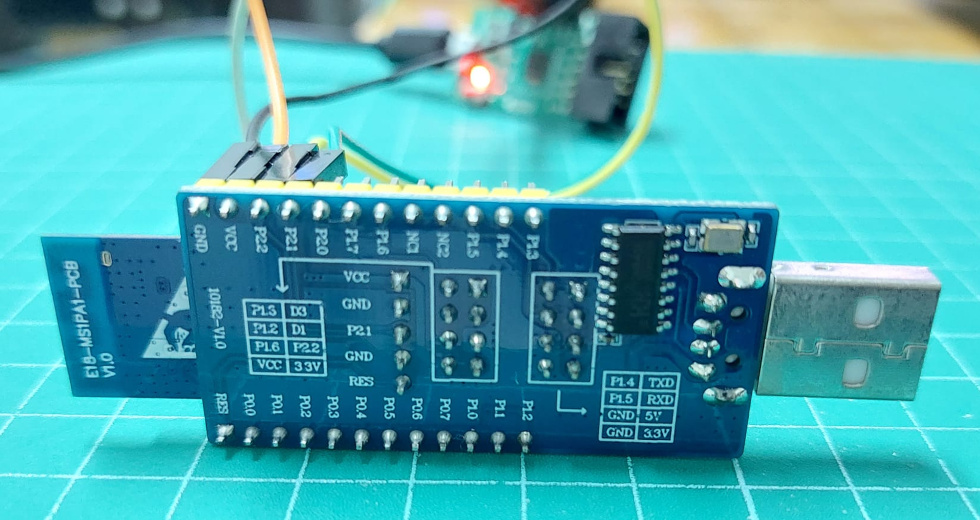
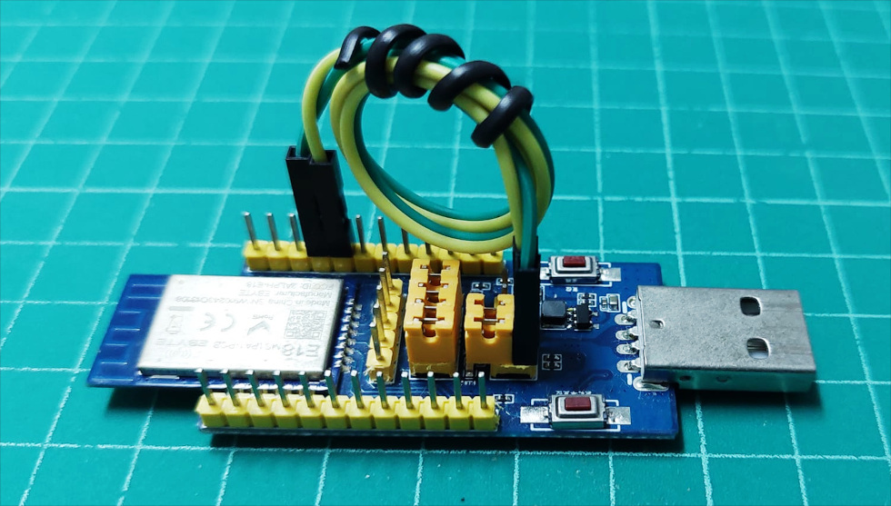
รูป: การต่อสายไฟโดยใช้ขา P0.2 และ P0.3 (แทนที่ P1.4 และ P1.5) เพื่อเชื่อมต่อกับชิป CH340G ที่อยู่บนบอร์ด E18-TBH-01 สำหรับสัญญาณ TXD และ RXD ตามลำดับ
ถ้านำไปใช้กับ Zigbee2MQTT จะต้องแก้ไขไฟล์ data/configuration.yaml
เพื่อตั้งค่าใช้งาน USB-to-Serial ให้ถูกต้อง ดังนี้
serial:
port: /dev/ttyUSB0
advanced:
baudrate: 115200
rtscts: false
เมื่อ Zigbee2MQTT เริ่มต้นทำงาน และเชื่อมต่อกับบอร์ด E18-TBH-01 ได้สำเร็จ จะมองเห็นข้อความเอาต์พุต ตามตัวอย่างดังนี้
Zigbee2MQTT:info 2022-09-27 20:19:26: Coordinator firmware version:
'{"meta":{"maintrel":3,"majorrel":2,"minorrel":6,"product":0,
"revision":20211115,"transportrev":2},"type":"zStack12"}'
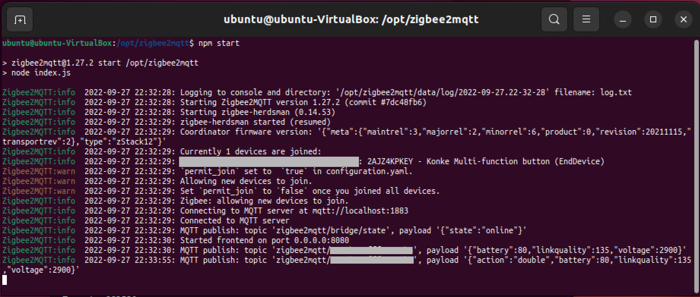
รูป: ตัวอย่างข้อความเอาต์พุตเมื่อโปรแกรม Zigbee2MQTT เริ่มต้นทำงาน
ถ้ามีข้อความ error ในลักษณะนี้
Zigbee2MQTT:error 2022-09-27 20:19:26: Failed to call 'Bridge'
'start' (TypeError: Cannot read property 'ieeeAddr' of undefined
ให้เริ่มต้นการทำงานของ Zigbee2MQTT ใหม่อีกครั้ง
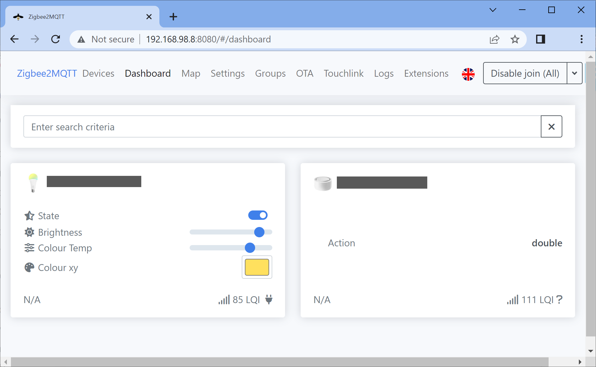
รูป: ตัวอย่างการทำงานของ Zigbee2MQTT Web Front-end
▷ กล่าวสรุป#
บทความนี้นำเสนอวิธีการและอุปกรณ์ในการติดตั้งเฟิร์มแวร์ Z-Stack ZigBee Coordinator สำหรับอุปกรณ์ CC2530 USB Dongle เพื่อนำมาใช้งานร่วมกับซอฟต์แวร์ Zigbee2MQTT
This work is licensed under a Creative Commons Attribution-ShareAlike 4.0 International License.
Created: 2022-09-27 | Last Updated: 2022-09-27